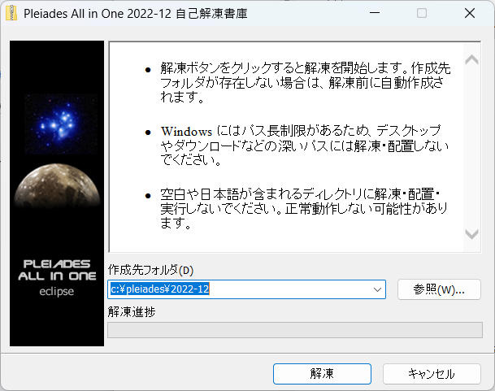

eclipseのインストール
eclipseをインストールします。
先ほどダウンロードしてきた、pleiades-2022-12-java-win-64bit-jre_20230212.exeをクリックしてください。
そうすると自動解凍書庫が開きます。
初期状態ではCドライブの直下に保存されます。インストールが終わると静かにウインドウが消え去ります。
eclipseだけではなく基本的にどんなインストーラーも参照か…(三点リーダー)を押せばインストール先を変更できますが、どこに保存したか見失ったりすると非常にめんどくさくなります。
新しいソフトをインストールするときに
- 01freesoftのようなそのまんまな名前のファイルを作ってそこに新しくインストールしたものをまとめる
- ファイルのパスを変更せずにそのままインストールする
この二つの派閥があります。ちなみに私は保存先を委ねられたら00freesoftにぶちこみ、すでに登録されてたらそのまま、CドライブがいっぱいいっぱいだったらDドライブ直下に入れる謎派閥です。